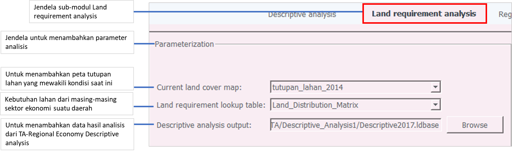
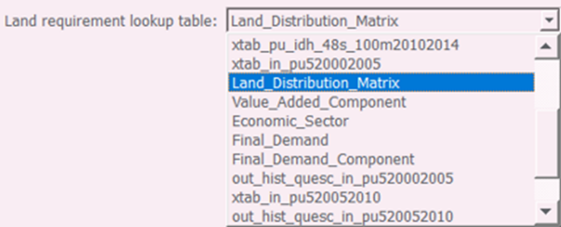

8.3 Proses Kerja
Proses Kerja
- Membuka jendela sub-Modul Descriptive Analysis, dengan memilih ikon Modul TA→Regional Economy→Land requirement analysis (Gambar 8.1), hingga terbuka jendela analisis seperti pada Gambar 8.2.

Gambar 8.89 Jendela analisis TA Regional Economy sub-modul Land requirement analysis
- Mengisi kolom Current land cover map
Kolom ini diisi dengan data tutupan lahan yang mewakili kondisi saat ini (existing). Pilih  → tutupan_lahan_2014 (Gambar 8.3)
→ tutupan_lahan_2014 (Gambar 8.3)
Gambar 8.90 Pemilihan data untuk mengisi kolom Current land cover map
- Mengisi kolom Land requierement lookup table
Kolom ini diisi dengan menggunakan data tabel kebutuhan lahan dari masing-masing sektor ekonomi suatu daerah. Pilih tombol  → Land_Distribution_Matrix (Gambar 8.4)
→ Land_Distribution_Matrix (Gambar 8.4)

Gambar 8.91 Pemilihan data untuk mengisi kolom Land requierement lookup table
- Mengisi kolom Description analysis output
Kolom ini diisi dengan menggunakan data hasil analisis . Pilih tombol  → Final_Demand (Gambar 8.5)
→ Final_Demand (Gambar 8.5)
Gambar 8.92 Pemilihan data yang digunakan untuk mengisi kolom Final consumtion matrix
- Memulai proes analisis
Setelah seluruh kolom terisi dengan benar, mulai proses analisis dengan memilih tombol Process. Tunggu hingga proses analisis selesai, yang ditandai dengan munculnya jendela seperti Gambar 8.6
Gambar 8.93 Jendela yang menunjukkan bahawa proses analisis telah selesai
Created with the Personal Edition of HelpNDoc: Easy EPub and documentation editor